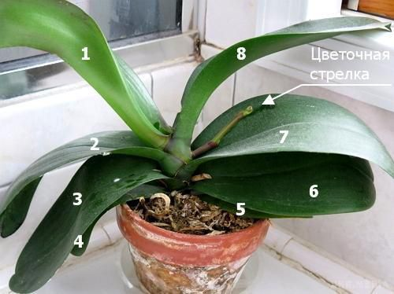
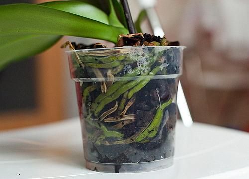
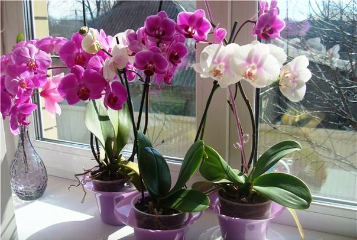
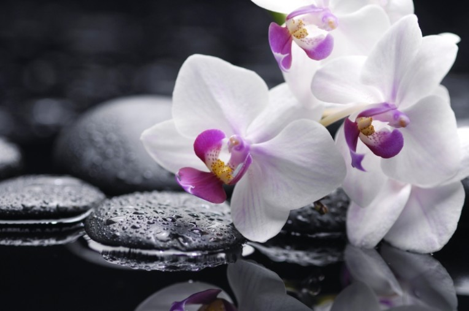
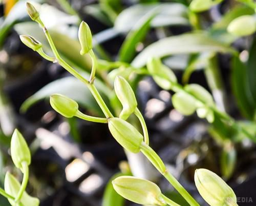
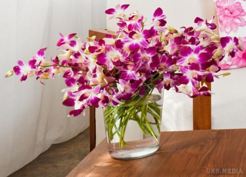

<div class="container">
    <div class="tips">
        <h1>Правила догляду за орхідеями</h1>
        <div class="text">
            Дивлячись на квітучу орхідею, багато квітникарів навіть не замислюються, купувати цю незвичайну рослину чи ні. Звичайно, купувати! Ось тільки чи буде вона так само добре цвісти і вдома?
            <div class="image1">
                
            </div>
            Всі знають, що орхідея – рослина доволі примхлива і вимагає делікатного догляду. Домогтися повторного цвітіння від неї можна, якщо знати всі фактори сприяють цьому і дотримувати певний режим догляду. Тоді цвітіння орхідеї триватиме від 2 до 6 місяців. А деякі види, як фаленопсис або ванда, можуть цвісти і круглий рік.
            Частота цвітіння орхідеї залежить від дотримання певних правил догляду. Щоб рослина цвіла, слід пам'ятати 9 важливих умов, що сприяють цьому.<br>
            <h6>1. Дізнайтеся вік орхідеї</h6>
            Якщо ви купили не цвітучу рослину, і вона не поспішає радувати квітковою стрілкою, може бути, що вона ще надто молода. Різні види орхідей зацвітають у віці від 1,5 до 3 років. Щоб визначити, що орхідея достатньо доросла, потрібно порахувати кількість пагонів. У дорослої рослини, готової до цвітіння, їх повинно бути від 5 до 8. Якщо квітки на орхідеї з'являються раніше – це не завжди добре. Справа в тому, що занадто молодій рослині може не вистачити сил на відновлення після цвітіння, і орхідея може загинути.<br>
            <h6>2. Не рухайте горщик</h6>
            Багато хто знає, що переїзд для орхідеї – справжній стрес. Але ця квітка не любить навіть незначних пересувань. Орхідея реагує на положення по відношенню до світла. Тому, якщо існує необхідність переставити горщик з рослиною, необхідно розміщувати його тією ж стороною до джерела освітлення, так як і стояв раніше. Також не варто рухати орхідею під час поливу. Пересування несприятливо позначається на рості квітки, особливо в момент появи квітконосу.<br>
            <h6>3. Приділяйте увагу кореням</h6>
            Як відомо, коріння орхідей активно беруть участь в процесі фотосинтезу, тому важливо стежити за тим, щоб їм було достатньо світла. Оскільки зайвий раз переміщувати орхідею не рекомендується, варто подбати про коріння заздалегідь. Наприклад, замість керамічних горщиків краще використовувати пластикові прозорі ємності з великою кількістю дренажних отворів. Не рекомендується брати для посадки цієї квітки ємності з рифленими стінками, оскільки його коріння мають особливість приростати до нерівних поверхонь. Крім цього, гострі краї і елементи можуть травмувати кореневу систему, що завдасть шкоди всій рослині в цілому.<br>
            <div class="image1">
                
            </div>
            <h6>4. Подбайте про освітлення</h6>
            Сонячне світло – це дуже важливий фактор, що впливає на цвітіння орхідеї. Без повного світлового дня (10-12 годин на добу) ці рослини не будуть цвісти. Тому восени та взимку, коли природного освітлення дуже мало, квіти слід досвічувати лампами.
            Фітолампи – спеціальні лампи, призначені для досвічування рослин: вони дають багато яскравого світла, не висушуючи при цьому повітря навколо квітів.
            Якщо орхідея випустила квітконіс восени або взимку, то слід подбати про те, щоб він не загинув із-за короткого світлового дня. Без досвічування в темний час року квітконіс може зупинитися в розвитку або засохнути. Якщо немає можливості досвічувати рослину цілком, досить організувати підсвічування тільки для кінчика квітконосу. Головне, стежити, щоб ні він, ні сама рослина не нагрівалися.<br>
            <div class="image1">
                
            </div>
            <h6>5. Забезпечте допустимий перепад температур</h6>
            Каталізатором для цвітіння багатьох видів орхідей є незначна різниця між показниками денної і нічної температури. Тому, щоб орхідея цвіла, вночі температура повинна бути на 4-6°С нижче, ніж вдень. Звичайно, створити такі умови протягом усього року буває проблематично. Але з кінця весни і до початку осені орхідеї можна тримати на відкритому повітрі, де температурний перепад досягається природним шляхом. У більш прохолодний час, коли квіти вже повинні жити в будинку, приміщення з орхідеями потрібно провітрювати. Тільки робити це слід дуже обережно, пам'ятаючи, що ці рослини дуже бояться протягів.<br>
            <h6>6. Правильно поливайте орхідею</h6>
            Поливати орхідею потрібно після просихання ґрунту – це дасть можливість уникнути загнивання коренів. Дані вимоги діють як влітку, так і взимку і стосуються як діткам, так і дорослим рослинам. Однак є тут і свої винятки. Після того як орхідея відцвіте, полив варто
            скоротити приблизно на місяць. У природі після цвітіння орхідеї починають зав'язувати насіння, які мають розлітатися в різні сторони на кілька кілометрів. Таке можливо тільки в сухі періоди, але ніяк не в сезон дощів. Тому потрібно забезпечити орхідеї умови, якомога більше наближені до природних – тоді квітка буде рости здоровою і часто цвісти.
            Перед цвітінням і під час нього орхідеї потрібно більш інтенсивний полив , ніж зазвичай. Далі, в період спокою, примірники з жорсткими листям і наявністю псевдобульб потрібно поливати за основним принципом (приблизно через 10-12 днів).<br>
            <div class="image1">
                
            </div>
            <h6>7. Зволожуйте повітря навколо рослини</h6>
            Ще одна важлива для цвітіння умова – вологість повітря. Якщо її буде недостатньо, орхідея може зупинитися в рості або на ній передчасно засохнуть нерозпущеною бутони і квітки.
            Щоб підвищити вологість у приміщенні, де росте орхідея, можна поставити поряд з квіткою тарілку з водою. Також дуже сухі періоди (коли в будинках включають опалення) рослина слід обприскувати. Відповідна вологість для орхідей – від 60% і вище.<br>
            <h6>8. Правильно підбирайте добрива</h6>
            Для підгодівлі орхідеї рекомендується використовувати суміші на основі фосфору і калію, оскільки вони стимулюють появу квіткових нирок. Крім того, використання таких добрив гарантує появу в рослини здорових і міцних квіток. А ось підгодівлями на основі азоту краще не захоплюватися: цей елемент, навпаки, гальмує розвиток квітконосів.<br>
            <h6>9. Не бійтеся «лякати» рослину</h6>
            Іноді, щоб змусити орхідею зацвісти, їй потрібно влаштувати невеликий стрес. Буває так, що всі умови для цвітіння дотримані, а квітка завзято не хоче пускати стрілку. Це іноді трапляється з-за того, що орхідеї дуже добре. В такому випадку всі сили рослина направляє на зростання зеленої маси. Один із способів стимулювати цвітіння – трохи «шокувати» орхідею: скоротити полив або переставити горщик з рослиною в більш прохолодне місце.<br>
            <div class="image1">
                
            </div>
            <h6>10. Період спокою у орхідей</h6>
            Після цвітіння у рослин настає період спокою, коли вона починає збирати сили для нового цвітіння. Догляд у цей час нічим не відрізняється від догляду в інші періоди. Квітка як і раніше має потребу в гарному
            поливі, високої вологості, достатньому освітленні і регулярної профілактики проти хвороб і шкідників
.           Що ж стосується живлення, то їх частоту та обсяг у період спокою варто зменшити. Якщо існує необхідність пересадити орхідею, то саме час зайнятися цією процедурою саме зараз, коли рослина більше не цвіте.
            Пересадка необхідна, якщо з дренажного отвору стирчать коріння, або грунт швидко просихає після поливу. Як правило, необхідність в даній процедурі з'являється через 2-3 роки.<br>
            Придатні орхідеї до зрізування?
            Що може бути прекрасніше букета з орхідей? Ось тільки живуть ці квіти недовго, та й не кожен вид підходить для зрізання. Спробуємо розібратися, як продовжити життя букету і які орхідеї вибирати.
            Стояти у вазі і зберігати свіжість і аромат протягом декількох тижнів (а іноді і місяці) можуть фаленопсиси, цимбідіуми і пафиопедилуми. Інші орхідеї ризикують не простояти навіть години, в'янучи буквально на очах.
            <div class="image1">
                
            </div>
            Якщо ви купуєте орхідеї в зрізку, дивіться в першу чергу на пелюстки і чашолистки. Вони повинні бути блискучі, ніби вкриті воском, і жорсткі – тоді орхідея простоїть довго.
        </div>
    </div>
</div>